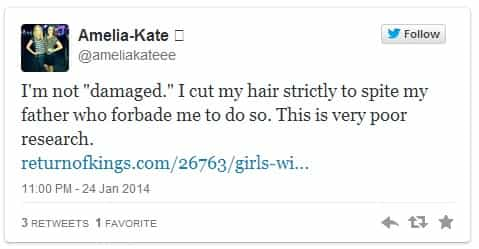
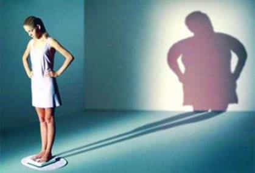

< < < Back
5 Signs A Girl Has Daddy Issues – Return Of Kings
Daddy issues in a woman can be a man’s best friend. And also the worst. On the one hand, meeting a girl with a fucked up relationship with her father can mean a modest, docile dynamo-in-the-sack who’ll come over to your house on short notice to have rough sex and bake cookies for you afterward. On the other hand, it can signal that you’re about to embark on a clusterfuck rollercoaster ride with a head case—that’ll likely end with the cops coming to your house, you having to repaint your car, or having to call Verizon Wireless to block a number from reaching your “handset.”
Whether she’s the product of an absentee father she’s constantly looking to replace or some transparently Freudian princess complex, you should know how to recognize a girl with daddy issues.
5 Signs a Girl Has Daddy Issues:
1. She’s excessively slutty or harbors twisted sexual fantasies.
Let the thinly veiled rape fantasy be your guide. It’s no secret that all girls like rough sex, to a degree, but your daddy-issues case will take that truism to a whole other level. They crave eyebrow-raising levels of pain and domination (“kink”). They cling to older men like a pair of Lululemons. They engage in major-league attention whoring. That doesn’t just mean changing their Facebook profile picture every other day, it means being turning up on the Girls Gone Wild commercial or doing porn despite her upper-middle-class, suburban upbringing.
2. She engages in some form of self-mutilation.
Self-harm comes in a variety of forms—nearly all of which speak to some deeper pathologies. Even in age where the tattoo has become ubiquitous, excessive tattooing, piercing, and mangling of their signs of femininity (e.g., chopping their hair off) is a telltale sign that a girl’s home life didn’t include a healthy relationship with a father figure. Cutting, of course, is the Cadillac of self-mutilation. Obsessive nail-biting is often a comorbid symptom of all of them.

3. Is delusionally over-confident.
Not all daddy issues result in self-loathing; some, in fact, lead to an overblown sense of self. Over-fathering—things like being called a “princess” every day for the first 18 years of life—can render a girl into a deluded brat with entitlement issues or, worse, a talentless twit who thinks she’s on the verge of being discovered. The next time a girl brags about not being able to cook, fails to thank you for a kind gesture, or doesn’t apologize for being late, it’s probably because “daddy’s little girl” never was taught those behaviors aren’t okay.
4. Is intimidated by a self-assured, masculine man.
Nothing causes a woman with issues with men more anxiety than a man just acting like a man, which is why I’m certain a majority of today’s Tumblr-style feminists are little more than the damaged products of poor or nonexistent fathering. Girls who have an irrational fear of male sexuality (everything is “creepy”), label any masculine guy pejoratively (“douchebag” or “dudebro”), or who routinely pick physical fights with men are generally displaying their deep-seeded resentment toward their fathers.
5. Has body-image issues or “issues around food” (i.e., an eating disorder).
People who supposedly know what they’re talking about are constantly telling us eating disorders “are all about control.” That is, girls who feel like they’ve lost control over their lives obsess over controlling the one thing they can control—what they eat. And who, invariably, supposedly smothered these girls into the eating-disorder clinic? Their overbearing fathers. I’d be shocked if anything less than 90 percent of girls with eating disorders have documentable daddy issues.

A girl is with daddy issues is the third rail of your sex life. While dangerous, she will keep your tunnels from ever backing up. Proceed, but proceed with caution.
Read More: 26 More Signs She’s A Slut


{kind=link}
{kind=link}
{kind=link}
{kind=link}
{kind=link}